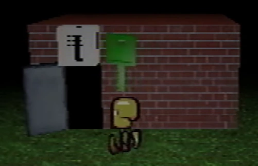
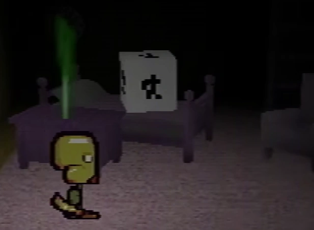
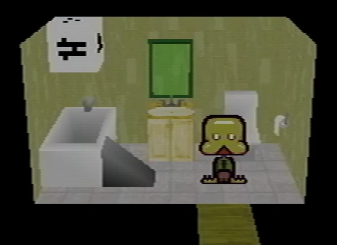
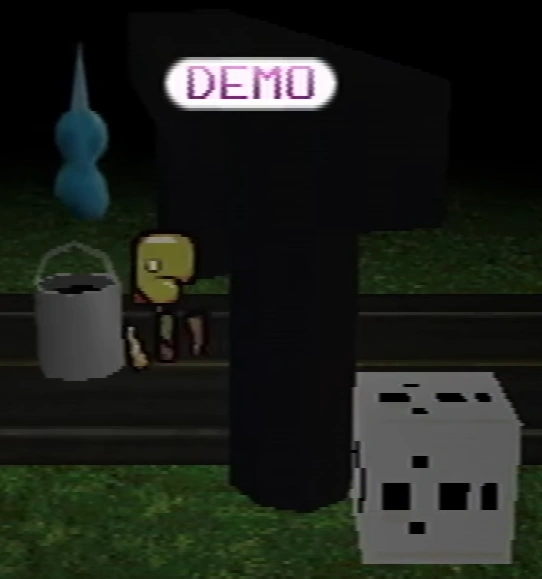
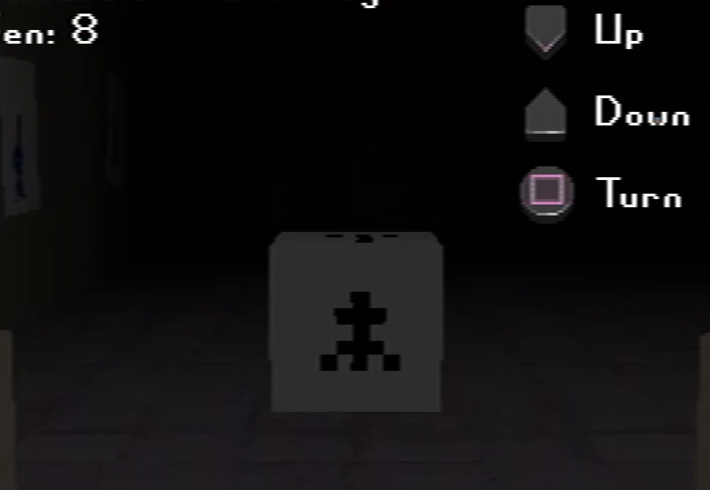
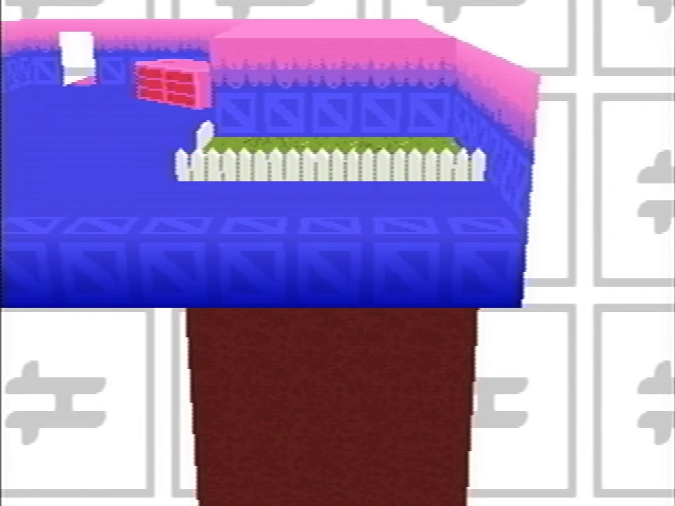

Symbol blocks
This article is about a topic that has no widely accepted interpretation or clear details.
This article's name is conjectural, and determined from a non-canon description of its appearance or purpose. Its contents refer to something that has no verified name in Petscop's canon.
The symbol blocks are objects located on and under the Newmaker Plane that represent connections between it and Even Care & Odd Care.
They appear as white cubes, with symbols on every side. The symbols are the same ones as the ones in the scrolling backgrounds of individual rooms in Odd Care (and in partial relation, Even Care). When a block has a symbol for a particular room, it implies some relation of the current room (or sometimes action) to that room.
Functionality
Excluding the entrance to Odd Care, there seems to be a consistency in the order of when the blocks are seen in regards to the association that is seemingly intended to be taken from the Even Care/Odd Care rooms they link to.
- When the block links to a room in Even Care that cannot be accessed in Odd Care, the association typically seems to be that something done in or reflected in Even Care should be performed or considered in the Newmaker Plane to make something happen, and so the block is seen at the start.
- When the block links to a room that is accessible in both Even Care and Odd Care, the association seems to refer to that something must be done in Odd Care to find the solution to a puzzle in the Newmaker Plane, and the block is only found or revealed after completing it.
It is implied that interacting with the symbol blocks (that can be reached by the guardian) does something, but it is unknown what, as every time Paul has walked up to one in shown footage, the video has always been cut. In recordings shown in Petscop 12, a sync with Paul's movements from Petscop 10 shows movement after Paul walked up to the symbol block on the left side of the Quitter's Room, and does not seem to show anything abnormal with the movement. However, this does not rule out something that may have only been visible on Paul's original playthrough.
In Petscop 11, where a symbol block is visible at one point in the house bathroom, then Paul walks up to it and the video cuts; later an exact movement is shown of Paul entering the bathroom again, but there is no block, and Paul is confused as he remembers seeing a block there. What this is supposed to indicate is unclear.
Instances
Odd Care entrance
{kind=link}

{kind=link}
In Petscop 9, after Paul interacts with the hidden present box in the party room and a choir sound plays, the guardian appears in the Newmaker Plane. He walks a while and finds a brick building, similar in texture but different in layout to the one he first came out of when entering the Newmaker Plane. There is an open door on the building, and above the door is a symbol block. Walking through this door enters Odd Care, in a new "entrance" room with a background corresponding to the symbol just seen on the symbol block. This "entrance" room leads back into the closed door in the first room of Even Care.
This symbol block rather directly shows association between the entrance building in the Newmaker Plane with its room in Odd Care.
Care NLM room

{kind=link}
Later in Petscop 9, Paul sets the treadmill in Pen's room in Odd Care to -1. After a cut, he enters the room where Care NLM is in the grave room and is able to catch her. After catching her, the light moves backwards, showing a symbol block. This symbol block has the same symbol as the background of Pen's room. Paul walks up to it and the video cuts.
The symbol block signifies the association of the treadmill in Pen's room in Odd Care to the state of the flower petals in the shed in the grave room, affecting Care NLM and allowing her to be caught. Care NLM's description seems to refer to this as "lying".
Left side of the Quitter's Room
{kind=link}

{kind=link}
In Petscop 10, Paul returns to Odd Care and opens both sides of the cages in Amber's room. After a game crash, Paul returns and checks that the cages are still open, before a video cut happens where Paul enters the left side of the Quitter's Room for the first time. There is a symbol block on the bed in the middle of the room that has the same symbol as the background of Amber's room. Paul walks up to it and the video cuts. A sync in Petscop 12 further suggests that doing this allowed Paul to "free" Tiara from the Quitter's Room, and may have been the intention.
The symbol block signifies the association of the cage doors being open or closed in Amber's room in Odd Care to which sides of the Quitter's Room are open.
In the bathroom
{kind=link}

{kind=link}
In Petscop 11, Paul enters the house bathroom. A symbol block is above the bathtub on the left that has the same symbol as the background of Randice and Wavey's room. Paul walks up to it with a ramp beside the bathtub and the video cuts; however, unlike all other occurrences of this, this scene replays exactly later also with Paul's commentary, where there is no ramp up to the bathtub and no symbol block. Paul also seems to recall that there was a block there, and is confused on what just happened.
Randice & Wavey's room is not accessible in Odd Care, so direct interactive relation to this area are unknown. However, there is a bucket in the house that appears after exiting the bathroom, much like there is a bucket in Randice & Wavey's room in Even Care. The layout of Randice & Wavey's Room is nearly identical to the house's living room layout, with the entrances in the same spot, and the lengthened dirt extension lining up with where the bathroom would be. In Petscop 13, Paul acknowledges these rooms are counterparts, and uses the appearance of the bucket to capture the teal tool and Roneth in similar ways. The house in Strange situation also appears with a differently-colored version of the scrolling symbol background used in Randice & Wavey's room.
.png (419 KB)")
Next to the road near the house
{kind=link}

{kind=link}
In Petscop 13, Paul finds the teal tool on the road near the house. Moving towards it makes it move away from him, and eventually moving upwards at a point, similar to Roneth. Next to an archway (that looks like the same model as the Gift Plane's archway), a symbol block can be seen that has the same symbol as the background of Roneth's room.
Paul has to use the bucket in the house to capture the teal tool in it (covering it in black paint) and use it in the house; this method is later used to catch Roneth by bringing the bucket from Randice & Wavey's room to Roneth's room and capturing him in the bucket. The symbol blocks in this case are likely an indication that capturing the teal tool should use the same method as catching Roneth, though Paul figures this out in reverse.
In front of the red tool
{kind=link}

{kind=link}
In gen 8 footage shown in recordings in Petscop 20, Marvin interacts with the screen in the tool room. Unlike before when Paul interacted with the screen, there are now controls to move the position of the camera that is otherwise positioned to watch the windmill; moving it up, down, or turning it. Marvin moves the camera down into the tool room, and turns it around, where in front of the red tool, a symbol block is now visible. This symbol block has the same symbol as the background of the connector room between Pen's room and Randice & Wavey's room in Even Care.
There is nothing interactive in the connector room, so any obvious associations are unclear. However, there is a picture of a landscape in the connector room, which could be associated with the screen in the tool room, and possibly more specifically one of the blue state of the Newmaker Plane that is shown in Petscop 23, Petscop 24, and the soundtrack.
Theories
{kind=link}

{kind=link}
The focused shot from the soundtrack video on the dirt extension
The Petscop Soundtrack video includes an unused track made for Petscop titled "bathroom-tomb" which focuses on the lengthened dirt extension in Randice & Wavey's room. The name of the track considered with the room's layout and association to the bathroom may have implied something with this dirt extension would more clearly relate to the house. A loading screen is also shown in Petscop 14 when entering the garage that focuses on this dirt extension.
The symbol block in front of the red tool in Petscop 20 only being visible through the camera that the screen views may suggest that it could theoretically also be visible if the player was a shadow monster man.